Detrás de cada profesión hay una persona
Lejos de ser un simple catálogo de cargos, este fotolibro propone un viaje narrativo y visual hacia la humanidad de sus protagonistas. Reúne ocho historias de mujeres que trabajan en ingeniería y geociencias para mirar sus saberes en acción y reconocer las vidas que existen alrededor de cada oficio.
ENGINEERING | GEOLOGY
Cuatro trayectorias, un interludio, cuatro más
Conocemos primero a la profesional: su campo y su trabajo. Luego la mirada se desplaza hacia la persona, sus pasiones, pausas y los territorios donde recarga energía. Finalmente, un retrato en blanco y negro nos revela a la mujer detrás del título académico.
En el centro del libro, las historias individuales se encuentran con la investigación. Y a través de códigos QR, la obra se expande hacia el audio y los medios digitales —este sitio—, permitiendo que sean ellas quienes le pongan voz y matices a su propia historia.
Es el primer libro de Pueblo Villano.
Algunas páginas
Una muestra del diseño. Los retratos finales de cada mujer solo están en el libro impreso.
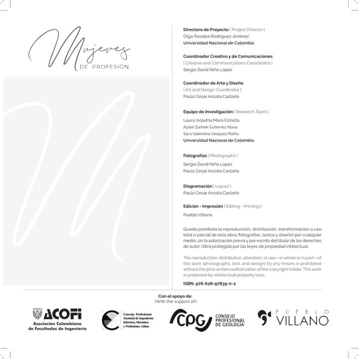
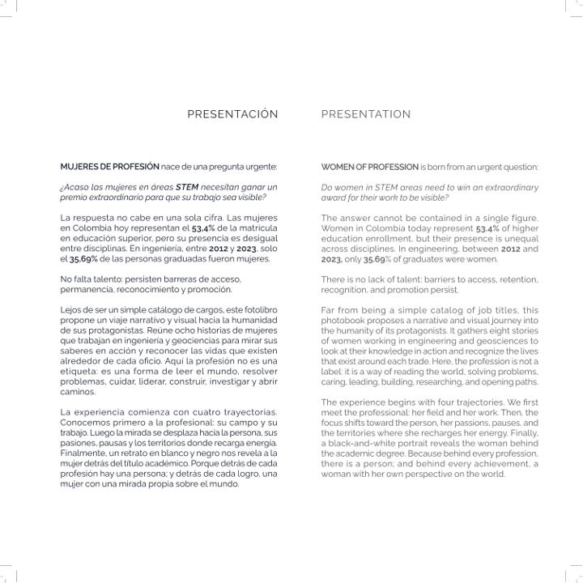
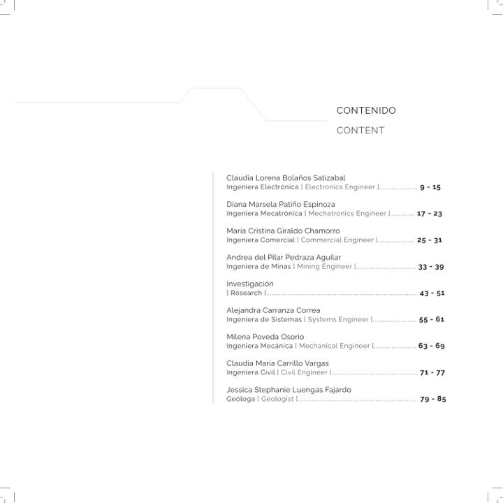
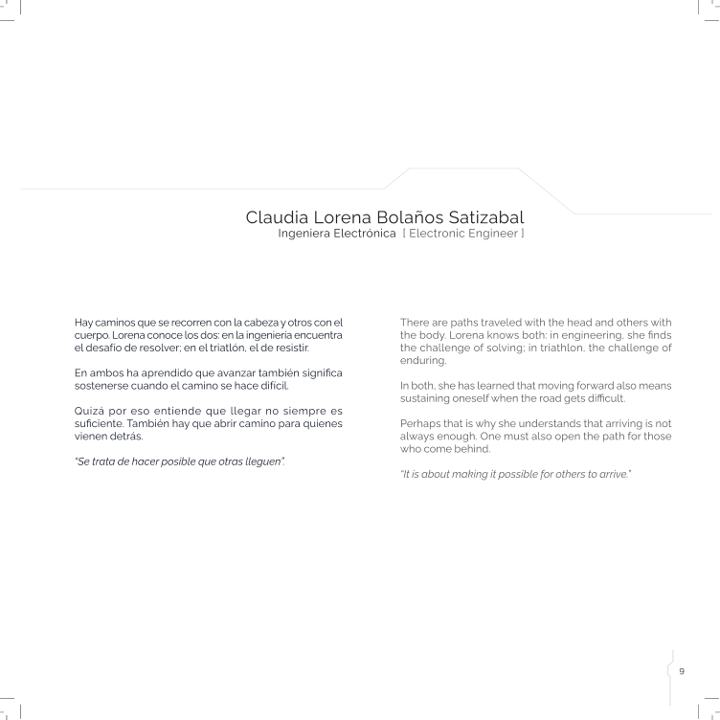
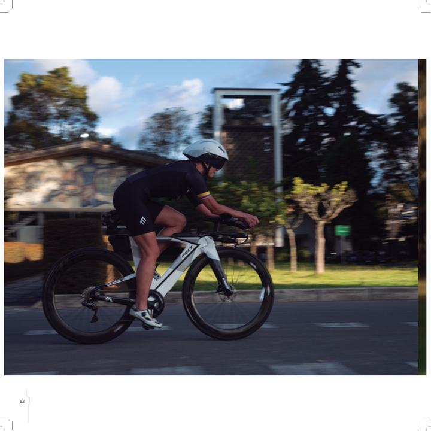
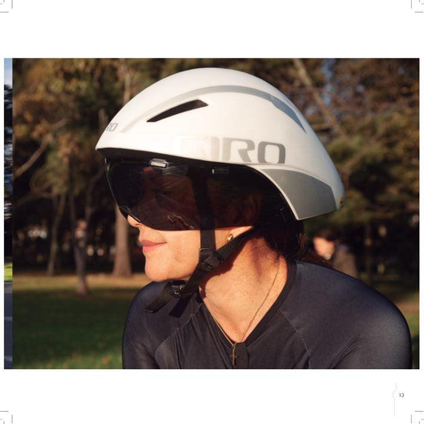
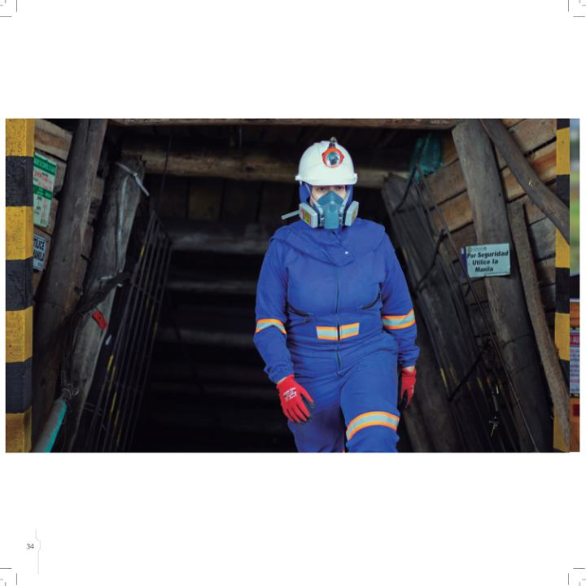
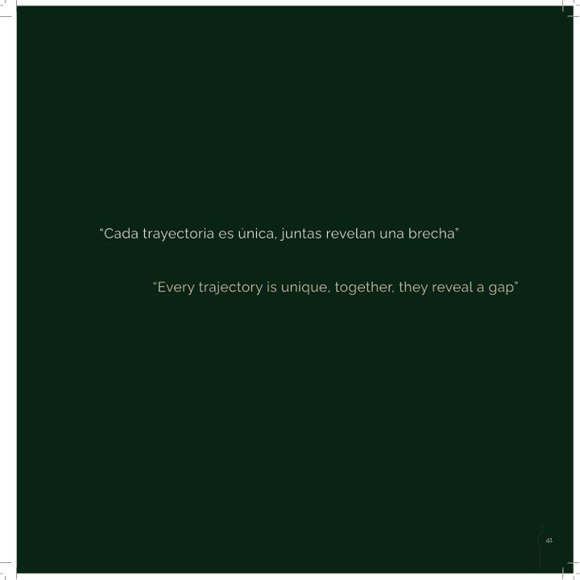
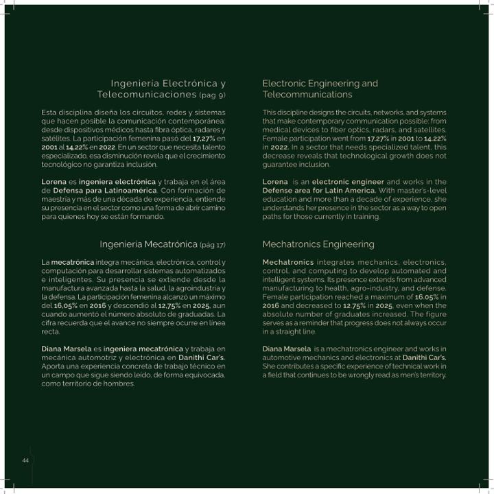
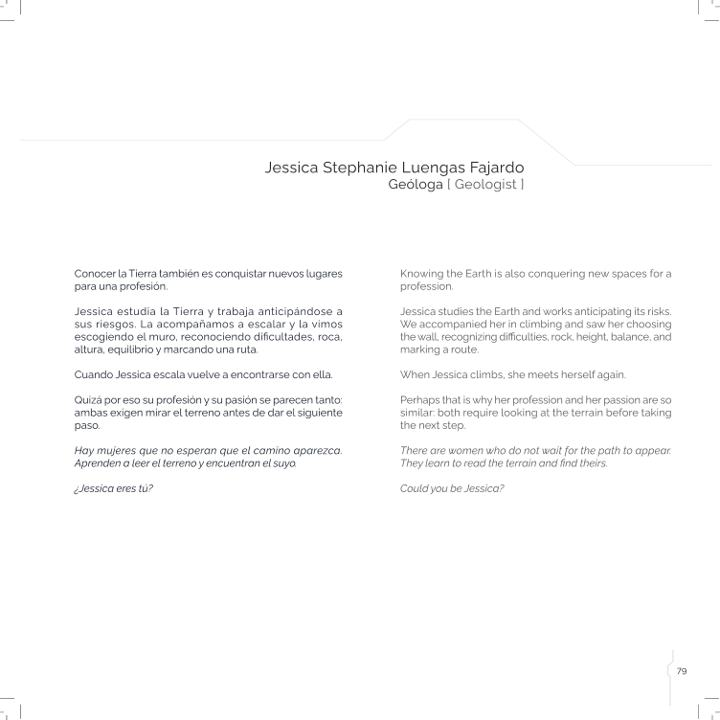
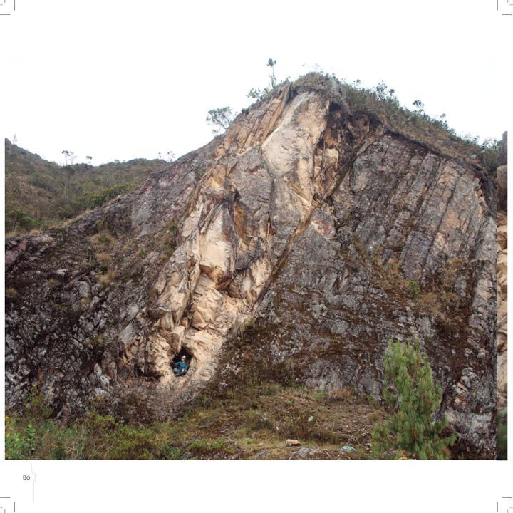
“No rescata heroínas aisladas. Reconoce a mujeres que ya están transformando sus campos con rigor, sensibilidad y libertad.”
El libro existe solo en papel. Así conserva su valor.
ISBN 978-628-97839-0-2 · Edición e impresión: Pueblo Villano